12 Kuraditosin graafikut, mida sa peaksid enne surma joonistama
Andmete plottimisel otsib analüütik tasakaalu informatsioonikao ja trendide/mustrite/kovarieeruvuste nähtavaks tegemise vahel. Idee on siin, et teie andmed võivad sisaldada a) juhuslikku müra, b) trende/mustreid, mis teile suurt huvi ei paku ja c) teid huvitavaid varjatud mustreid. Kui andmeid on palju ja need on mürarikkad ja kui igavad trendid/mustrid varjavad huvitavaid trende/mustreid, siis aitab vahest andmete graafiline redutseerimine üldisemale kujule ja nende modelleerimine. Kui andmeid ei ole väga palju, siis tasuks siiski vältida infot kaotavaid graafikuid ning joonistada algsed või ümber arvutatud andmepunktid. Järgnevalt esitame valiku graafikutüüpe erinevat tüüpi andmetele.
12.1 Cleveland plot
x- pidev muutuja; y - faktormuutuja
Seda plotti kasuta a) kui iga muutja kohta on üks andmepunkt või b) kui soovid avaldada keskmise koos usalduspiiridega.
Sageli lahendatakse sarnased ülesanded tulpdiagrammidega, mis ei ole aga üldiselt hea mõte, sest tulpdiagrammid juhivad asjatult tähelepanu tulpadele endile, pigem kui nende otstele, mis tegelikult andmete keskmist kajastavad. Kuna inimese aju tahab võrrelda tulpade kõrgusi suhtelistes, mitte absoluutsetes ühikutes (kui tulp A on 30% kõrgem kui tulp B, siis me näeme efekti suurust, mis on u 1/3), peavad tulbad algama mingilt oodatavalt baastasemelt (tavaliselt nullist). See aga võib muuta raskeks huvitavate efektide märkamise, kui need on protsentuaalselt väikesed. Näiteks 5%-ne CO2 taseme tõus atmosfääris on teaduslikult väga oluline, aga tulpdiagrammi korrektselt kasutades tuleb vaevu graafikult välja.
Kõigepealt plottime, mitu korda esinevad diamond tabelis erinevate faktormuutuja clarity tasemetega teemandid (clarity igale tasemele vastab üks number – selle clarity-ga teemantite arv).
dd <- diamonds %>%
group_by(clarity) %>%
summarise(number_of_diamonds = n())
dd %>%
ggplot(aes(x = number_of_diamonds,
y = reorder(clarity, number_of_diamonds))) +
geom_point(size = 3) +
theme(panel.grid.major.x = element_blank(),
panel.grid.minor.x = element_blank(),
panel.grid.major.y = element_line(colour = "grey60", linetype = "dashed")) +
labs(y = "clarity") +
theme_bw()
Graafiku loetavuse huvides on mõistlik on Cleveland plotil Y- telg sorteerida väärtuste järgi.
Järgmisel joonisel on näha irise tabeli Sepal length veeru keskmised koos 50% ja 95% usaldusintervallidega. Usaldusintervallid annavad hinnangu meie ebakindlusele keskväärtuse (mitte näiteks algandmete) paiknemise kohta, arvestades meie valimi suurust ja sellest tulenevat valimiviga. 50% CI tähendab, et me oleme täpselt sama vähe üllatunud leides tõese väärtuse väljaspoolt intervalli, kui leides selle intervalli seest. 95% CI tähendab, et me oleme mõõdukalt veendunud, et tõene väärtus asub intervallis (aga me arvestame siiski, et ühel juhul 20-st ta ei tee seda). NB! Mõlemad tõlgendused eeldavad, et meie andmetes esinev juhuslik varieeruvus on palju suurem kui seal leiduv suunatud varieeruvus (ehk bias).
Kasutame Publish::ci.mean(), et arvutada usaldusintervallid (antud juhul 10% CI)
library(Publish) #siit ci.mean()
a <- rnorm(10)
a1 <- ci.mean(a, alpha = 0.9)
str(a1)
#> List of 6
#> $ mean : num 0.151
#> $ se : num 0.332
#> $ lower : num 0.108
#> $ upper : num 0.194
#> $ level : num 0.9
#> $ statistic: chr "arithmetic"
#> - attr(*, "class")= chr [1:2] "ci" "list"kisume listi elemendi nimega lower (usaldusintervalli alumine piir) välja 3-l alternatiivsel viisil
a1$lower
#> [1] 0.108
a1[[3]]
#> [1] 0.108
a1 %>% pluck("lower")
#> [1] 0.108iris1 <- iris %>%
group_by(Species) %>%
summarise(Mean = mean(Sepal.Length),
CI_low_0.5 = ci.mean(Sepal.Length, alpha=0.5) %>% pluck("lower"),
CI_high_0.5 = ci.mean(Sepal.Length, alpha=0.5) %>% pluck("upper"),
CI_low_0.95 = ci.mean(Sepal.Length) %>% pluck("lower"),
CI_high_0.95 = ci.mean(Sepal.Length) %>% pluck("upper")
)
#pluck() takes a named element out of a list
#ci.mean() output is a list of 6 elements
ggplot(data = iris1, aes(x = Mean, y = Species)) +
geom_point(size = 3) +
geom_errorbarh(aes(xmin = CI_low_0.5,
xmax = CI_high_0.5),
height = 0.2) +
geom_errorbarh(aes(xmin = CI_low_0.95,
xmax = CI_high_0.95),
height = 0.4) +
theme_bw()+
theme(panel.grid.major.x = element_blank(),
panel.grid.minor.x = element_blank(),
panel.grid.major.y = element_line(colour = "grey60", linetype = "dashed")) +
labs(x = "Sepal length with 50% and 95% CI",
y = NULL) 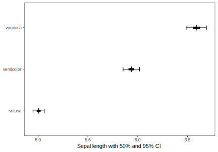
Alternatiivne graafiku kuju (muudetud on ainult geom_point size ja shape parameetreid):
ggplot(data = iris1, aes(x = Mean, y = Species)) +
geom_point(size = 5, shape = 108) +
geom_errorbarh(aes(xmin = CI_low_0.5,
xmax = CI_high_0.5),
height = 0,
size = 2) +
geom_errorbarh(aes(xmin = CI_low_0.95,
xmax = CI_high_0.95),
height = 0.1) +
theme_bw()+
theme(panel.grid.major.x = element_blank(),
panel.grid.minor.x = element_blank(),
panel.grid.major.y = element_line(colour = "grey60", linetype = "dashed")) +
labs(x = "Sepal length with 50% and 95% CI",
y = NULL) 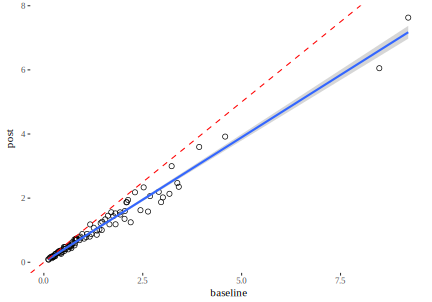
CI-d saab arvutada ka käsitsi. Kui valimi suurus on piisav ja normaaljaotus pole meie andmetest liiga kaugel, siis saame CI arvutamiseks kasutada järgmisi heuristikuid:
#> # A tibble: 7 x 2
#> CI_percentage nr_of_SEMs
#> <dbl> <dbl>
#> 1 50 0.675
#> 2 75 1.15
#> 3 90 1.64
#> 4 95 1.96
#> 5 97 2.17
#> 6 99 2.58
#> # … with 1 more rowSEM on standardviga, mille arvutame jagades valimi standardhälbe ruutjuurega valimi suurusest N. Kuna CI sõltub SEM-ist, sõltub see muidugi ka N-st, aga mitte lineaarselt, vaid üle ruutjuure. See tähendab, et uuringu usaldusväärsuse tõstmine, tõstes N-i kipub olema progressiivselt kulukas protsess. Analoogiana võib siin tuua sportliku vormi tõstmine, kus trennis käimisega alustades on suhteliselt lihtne tõsta oma sooritust näiteks 20% võrra, aga peale aastast usinat rassimist tuleb juba teha väga tõsine pingutus, et saavutada veel 1% tõusu.
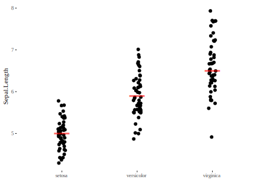
Nagu näha jooniselt, on meil tegu progresiivselt kallineva ülesandega: mida rohkem tahame usalduspiire kitsamaks muuta suhteliselt (mis on sama, mis öelda, et me tahame tõsta katse tundlikust), seda suurema tõusu peame tagama kogutud andmete hulgas absoluutarvuna.
12.2 Andmepunktid mediaani või aritmeetilise keskmisega
x - faktormuutuja; y - pidev muutuja
Kui N < 20, siis on see tavaliselt parim valik sest säilitab maksimaalselt andmetes leiduvat informatsiooni.
ggplot(iris, aes(x=Species, y=Sepal.Length)) +
geom_jitter(width = 0.05)+
stat_summary(fun.y = median, geom = "point", shape = 95,
color = "red", size = 15, alpha = 0.6) +
labs(x = NULL) +
theme_tufte()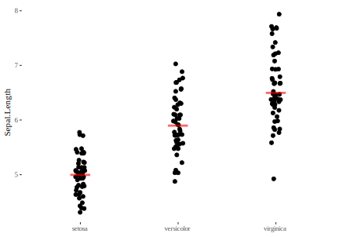
Siin on meil lausa 50 andmepunkti iga Irise liigi kohta ja graafik on ikkagi täitsa hästi loetav.
Meil on võimalik teha sellest graafikust versioon, mis ei pane andmepunkti y skaalal täpselt õigesse kohta, vaid tekitab histogrammilaadsed andmebinnid, kus siiski iga punkt on eraldi näidatud. See lihtsustab veidi “kirjude” kompleksete andmete esitust, kuid kaotab informatsiooni andmepunktide täpse asukoha kohta. Eesmärk on muuta erinevused gruppide vahel paremini võrreldavaks.
p<-ggplot(iris, aes(x=Species, y=Sepal.Length)) +
geom_dotplot(binaxis='y', stackdir='center', stackratio=1.3, dotsize=0.7)
p + stat_summary(fun.y = median, geom = "point", shape = 95,
color = "red", size = 15)
#try using shape=18, size=5.
#add mean and SD, use pointrange:
p + stat_summary(fun.data=mean_sdl, fun.args = list(mult=1), geom="pointrange", color="red")
#use errorbar instead of pointrange:
#p + stat_summary(fun.data=mean_sdl, fun.args = list(mult=1), geom="errorbar", color="red", width=0.2, size=1) + stat_summary(fun.y=mean, geom="point", size=3, color="red") 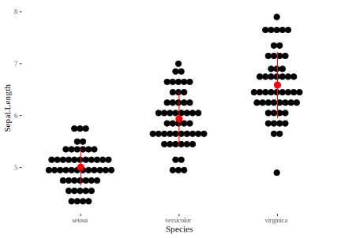
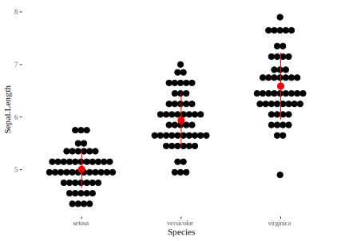
Muuda punktide värvi nii:
scale_fill_manual() : to use custom colors
scale_fill_brewer() : to use color palettes from RColorBrewer package
scale_fill_grey() : to use grey color palettes
12.3 Histogramm
x - pidev muutuja
Kui teil on palju andmepunkte (>50) ning soovite uurida nende jaotust (ja/või võrrelda mitme andmestiku jaotust) siis tasub kindlasti alustada histogrammist. Histogrammi koostamine näeb välja järgmine:
- ploti andmepunktid x - teljele (järgnev on põhimõtteliselt ühedimensionaalne plot, kuigi andmepunktid on üksteise suhtes veidi nihutatud, et nad üksteist ei varjutaks).
stripchart(iris$Sepal.Length, method = "jitter")
- jaga andmestik x-teljel võrdse laiusega vahemikesse (binnidesse)

- loe kokku, mitu andmepunkti sattus igasse binni. Näiteks on meil viimases binnis (7.5 … 8) kuus anmdepunkti
- ploti iga bin tulpdiagrammina (y- teljel on tüüpiliselt andmepunktide arv)
ggplot(iris, aes(x=Sepal.Length)) + geom_histogram(breaks= seq(4, 8, by=0.5), color="white")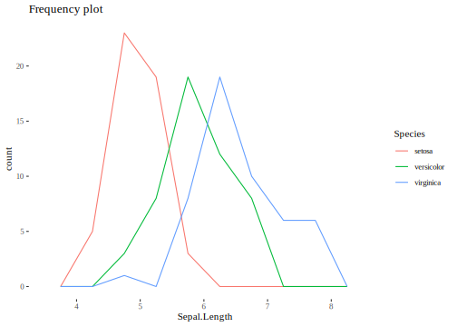
Tavaliselt on mõistlik määrata histogrammi binnide laius ja asukoht breaks argumeniga. On olemas ka alternatiivsed argumendid bins, mis annab binnide arvu, ja binwidth, mis annab binni laiuse, aga ohutum on kasutada breaks-i. Vt ka geom_boxplot() funktsiooni helpi.
Järnevalt genereerime ühtlase jaotuse 0 ja 1 vahel ning plotime selle kahel histogrammil, millest esimene (halli taustaga) kasutab bins argumenti ja teine (sinine) kasutab breaks argumenti.
set.seed(12)
a1 <- tibble(a=runif(200))
ggplot(a1, aes(a)) +
geom_histogram(bins = 20, color="white", alpha=0.8, fill="grey")+
geom_histogram(breaks= seq(0,1, by=0.05), color= "navyblue", fill=NA)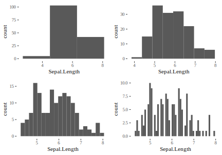
Pane tähele, et tulemus on küllaltki erinev ja et breaks argument töötab korrektselt. Nagu järgnev koodijupp näitab, on meil on 6 väärtust alla 0.05 (1. bin) ja 8 väärtust üle 0.95 (20. bin), mis on korrektselt kajastatud ainult breaks argumentdiga histogrammil.
a1 %>% filter(a < 0.05) %>% nrow()
#> [1] 6
a1 %>% filter(a > 0.95) %>% nrow()
#> [1] 8NB! Väga tähtis on mõista, et binnide laius on meie suva järgi määratud. Samade andmete põhjal joonistatud erineva binilaiusega histogrammid võivad anda lugejale väga erinevaid signaale.
library(gridExtra)
g1 <- ggplot(iris, aes(Sepal.Length)) + geom_histogram(bins = 3)
g2 <- ggplot(iris, aes(Sepal.Length)) + geom_histogram(bins = 8)
g3 <- ggplot(iris, aes(Sepal.Length)) + geom_histogram(bins = 20)
g4 <- ggplot(iris, aes(Sepal.Length)) + geom_histogram(bins = 50)
grid.arrange(g1, g2, g3, g4, nrow = 2)
Seega on tasub joonistada samadest andmetest mitu erineva binnilaiusega histogrammi, et oma andmeid vaadata mitme nurga alt.
Kui tahame võrrelda mitmeid jaotusi, siis on meil järgmised variandid:
Kõigepealt, me võime panna mitu histogrammi üksteise alla. Selleks kasutame facet_grid funktsiooni ja paneme joonisele ka hallilt summaarsete andmete histogrammi. Selle funktsioon on pakkuda joonise lugejale ühtset võrdlusskaalat üle kolme paneeli.
d_bg <- iris[, -5] # Background Data - full without the 5th column (Species)
ggplot(data = iris, aes(x = Sepal.Length, fill = Species)) +
geom_histogram(data = d_bg, fill = "grey", alpha=0.8, bins=10) +
geom_histogram(colour = "black", bins=10) +
facet_grid(Species~.) +
guides(fill = FALSE) + # to remove the legend
theme_tufte() # for clean look overall
Teine võimalus on näidata kõiki koos ühel paneelil kasutades histogrammi asemel sageduspolügoni. See töötab täpselt nagu histogramm, ainult et tulpade asemel joonistatakse binnitippude vahele jooned. Neid on lihtsam samale paneelile üksteise otsa laduda.
ggplot(iris, aes(Sepal.Length, color=Species)) + geom_freqpoly(breaks= seq(4, 8, by=0.5)) + theme_tufte()+ labs(title="Frequency plot")
Selle “histogrammi” binne saab ja tuleb manipuleerida täpselt samamoodi nagu geom_histogrammis.
Veel üks hea meetod histogrammide võrdlemiseks on joonistada nn viiuliplot. See asendab sakilise histogrammi silutud joonega ja muudab seega võrdlemise kergemaks. Viiulile on ka kerge lisada algsed andmepunktid
ggplot(iris, aes(Species, Sepal.Length)) + geom_violin(aes(color=Species))+
geom_jitter(size=0.2, width=0.1) + labs(title="Violin plot", x=NULL)
12.4 Tihedusplot
Hea alternatiiv histogrammile on joonistada silutud andmejaotus, mis käitub silutud histogrammina.
ggplot(iris, aes(Sepal.Length, fill=Species)) + geom_density(alpha=0.5)
Adjust parameeter reguleerib silumise määra. 
Veel üks võimalus jaotusi kõrvuti vaadata on joyplot, mis paneb samale paneelile kasvõi sada tihedusjaotust. Näiteid vaata ka aadressilt https://cran.r-project.org/web/packages/ggridges/vignettes/gallery.html
library(ggridges)
library(viridis)sch <- read.csv("data/schools.csv")
sch$school <- as.factor(sch$school)
ggplot(sch, aes(x = score1, y = school, group = school)) +
scale_fill_viridis(name = "score", option = "C") +
geom_density_ridges(scale = 4, size = 0.25, rel_min_height = 0.05) +
theme_ridges()
#> Warning: Removed 202 rows containing non-finite values
#> (stat_density_ridges).
ggplot(sch, aes(x = score1, y = school, group = school, fill = ..x..)) +
scale_fill_viridis(name = "score", option = "C") +
geom_density_ridges_gradient(scale = 4, size = 0.25, rel_min_height = 0.05, gradient_lwd = 1) +
theme_ridges()  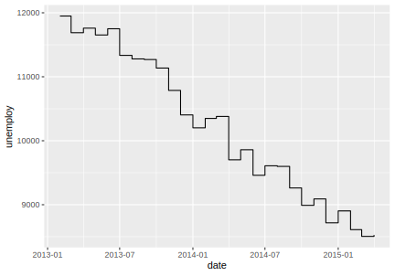
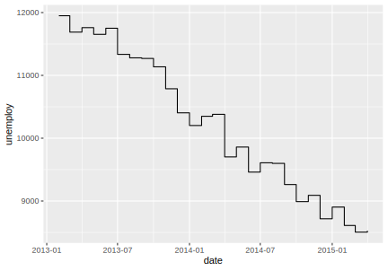
ggplot(mpg, aes(x=hwy, y=manufacturer, color=drv, point_color=drv, fill=drv)) +
geom_density_ridges(jittered_points=TRUE, scale = .95, rel_min_height = .01,
point_shape = "|", point_size = 3, size = 0.25,
position = position_points_jitter(height = 0)) +
scale_y_discrete(expand = c(.01, 0)) +
scale_x_continuous(expand = c(0, 0), name = "highway fuel consumption [gallons]") +
theme_ridges(center = TRUE)
12.5 Boxplot
See plot mõeldi välja John Tukey poolt arvutieelsel ajastul (1969), ja see võimaldab millimeeterpaberi ja joonlaua abil võrrelda erinevaid jaotusi. Biomeditsiinis sai boxplot ülipopulaarseks veidi hilinenult, ca. 2010-2015. Inimese jaoks, kes oskab arvutit kasutada, võib viiulite joonistamine tunduda atraktiivsem (ja informatiivsem), aga kui võrreldavaid jaotusi on päris palju, siis võib ka boxploti kandiliselt lihtsusel eeliseid leida. Igal juhul käib klassikalise boxploti konstrueerimine järgevalt.
joonista andmepunktid 1D-s välja (nagu me tegime histogrammi puhul)
keskmine andmepunkt on mediaan. Selle kohale tuleb boxplotil keskmine kriips
ümbritse kastiga pooled andmepunktid (mõlemal pool mediaani). Nii määrad nn. interkvartiilse vahemiku (IQR).
pooleteistkordne IQR (y-telje suunas) annab meile vurrude maksimaalse pikkuse. Vurrud joonistatakse siiski ainult kuni viimase andmepunktini (aga kunagi mitte pikemad kui 1.5 IQR)
andmepunktid, mis jäävad väljaspoole 1.5 x IQR-i joonistatakse eraldi välja kui outlierid.
ggplot(iris, aes(Species, Sepal.Length, color = Species)) +
geom_boxplot()+
geom_jitter(width = 0.1, size=0.1, color="black")
Boxplotile saab lisada ka aritmeetilise keskmise (järgnevas punase täpina), aga pea meeles, et boxploti põhiline kasu tuleb sellest, et see ei eelda sümmeetrilist andmejaotust. Seega on mediaani lisamine üldiselt parem lahendus.
ggplot(iris, aes(Species, Sepal.Length, color = Species)) +
geom_boxplot()+ stat_summary(fun.y=mean,col='red', geom='point', size=2)

See pilt näitab, et kui jaotus on mitme tipuga, siis võib boxplotist olla rohkem kahju kui kasu.
12.6 Joongraafikud
x - pidev muutuja (aeg, konsentratsioon, jms); y - pidev muutuja; x ja y vahel on deterministlik seos (trend)
Joongraafik (geom_line) töötab hästi siis, kui igale x-i väärtusele vastab unikaalne y-i väärtus ja iga kahe mõõdetud x-i väärtuse vahele jääb veel x-i väärtusi, mida pole küll mõõdetud, aga kui oleks, siis vastaks ka neile unikaalsed y-i väärtused. Lisaks me loodame, et y-i suunaline juhuslik varieeruvus ei ole nii suur, et maskeerida meid huvitavad trendid. Kui tahad näidata, kus täpselt muutus toimus, kasuta geom_step funktsiooni.
recent <- economics[economics$date > as.Date("2013-01-01"), ]
ggplot(recent, aes(date, unemploy)) + geom_line()
ggplot(recent, aes(date, unemploy)) + geom_step() 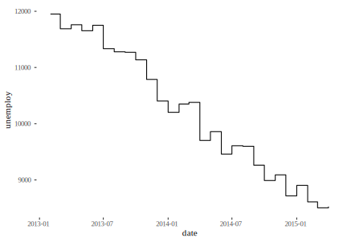
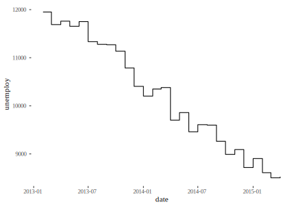
Astmeline graafik on eriti hea olukorras, kus astmete vahel y-dimensioonis muutust ei toimu – näiteks piimapaki hinna dünaamika poes.
Geom_path võimaldab joonel ka tagasisuunas keerata.
# geom_path lets you explore how two variables are related over time,
# e.g. unemployment and personal savings rate
m <- ggplot(economics, aes(unemploy/pop, psavert))
m + geom_path(aes(colour = as.numeric(date)))
Tulpdiagramm juhib lugeja tähelepanu väikestele teravatele muutustele. Kui see on see, millele sa tahad tähelepanu juhtida, siis kasuta seda.
p1 <- ggplot(economics, aes(date, unemploy)) + geom_line()
p2 <- ggplot(economics, aes(date, unemploy)) + geom_bar(stat="identity")
grid.arrange(p1, p2, nrow = 2)
Et mürarikkaid andmeid siluda kasutame liikuva keskmise meetodit. Siin asendame iga andmepunkti selle andmepunkti ja tema k lähima naabri keskmisega. k on tavaliselt paaritu arv ja mida suurem k, seda silutum tuleb tulemus.
library(zoo)
economics$rollmean <- rollmean(economics$unemploy, k = 13, fill = NA)
ggplot(economics, aes(date, rollmean)) + geom_line()
#> Warning: Removed 12 rows containing missing values
#> (geom_path).
Kui on oht, et ebahuvitavad tsüklid ja trendid varjutavad veel mingeid mustreid, mis meile võiks huvi pakkuda, võib proovida lahutada aegrea komponentideks kasutades seasonaalset lahutamist (Seasonal decomposition). R::stl() kasutab selleks loess meetodit lahutades aegrea kolmeks komponendiks. 1) trendikomponent püüab keskmise taseme muutusi ajas. 2) seasonaalne komponent lahutab muutused aastaaegade lõikes (konstantse amplituudiga tsüklilisus aegrea piires) ja 3) irregulaarne komponent on see, mis üle jääb. aegrea osadeks lahutamine võib olla additiivne või mulitlikatiivne. Additiivses mudelis
\[Y_t = Trend_t + Seasonal_t + Irregular_t\]
summeeruvad komponendid igas punktis algesele aegreale. Muliplikatiivses mudelis
\[Y_t = Trend_t * Seasonal_t * Irregular_t\] tuleb selleks teha korrutamistehe.
Näiteks lahutame aegrea, mis käsitleb CO_2 konsentratsiooni muutusi viimase 50 aasta vältel.
require(graphics)
#co2 is a time series object
#stl() takes class "ts" objects only!
plot(stl(co2, "per"))
Pane tähele graafiku paremas servas asuvaid halle kaste, mis annavad mõõtkava erinevate paneelide võrdlemiseks. Siit näeme, et “remainder” paneeli andmete kõikumise vahemik on väga palju väiksem kui ülemisel paneelil, kus on plotitud täisandmed.
Nüüd esitame versiooni, kus remainder-i andmeid on tugevasti silutud, et võimalikku signaali mürast eristada.
plot(stl(log(co2), s.window = "per", t.window = 199))
# t.window -- the span (in lags) of the loess window for trend extraction, which should be odd.
12.7 Scatter plot
x - pidev muutuja; y -pidev muutuja; x ja y vahel on tõenäosuslik, mitte deterministlik, seos.
Scatter ploti abil otsime oma andmetest trende ja mustreid.
X-teljel on geisri Old Faithful pursete tugevus ja y-teljel pursete vaheline aeg. Kui kahe purske vahel kulub rohkem aega, siis on oodata tugevamat purset. Tundub, et see süsteem töötab kahes diskreetses reziimis.
m <- ggplot(faithful, aes(x = eruptions, y = waiting)) +
geom_point() +
xlim(0.5, 6) +
ylim(40, 110)
m + geom_density_2d()
Kui punkte on liiga palju, et välja trükkida, kasuta geom = “polygon” varianti.
m + stat_density_2d(aes(fill = ..level..), geom = "polygon")
Nüüd plotime 3 iriseliigi õielehe pikkuse seose tolmuka pikkusega, ja lisame igale liigile mittelineaarse mudelennustuse koos 95% usaldusintervalliga. Mudel püüab ennustada keskmist õielehe pikkust igal tolmuka pikkusel, ja 95% CI kehtib ennustusele keskmisest, mitte üksikute isendite õielehtede pikkustele.
ggplot(iris, aes(Sepal.Length, Petal.Length, color = Species)) +
geom_point() +
geom_smooth()
See mudeldamine tehti loess meetodiga, mis kujutab endast lokaalselt kaalutud polünoomset regressiooni. Loessi põhimõte on, et arvuti fitib palju lokaalseid lineaarseid osamudeleid, mis on kaalutud selles mõttes, et andmepunktidel, mis on vastavale osamudelile lähemal, on mudeli fittimisel suurem kaal. Nendest osamudelitest silutakse siis kokku lõplik mudel, mida joonisel näete.
Järgmiseks värvime eelnevalt tehtud plotil punktid iirise liigi kaupa aga joonistame ikkagi regressioonisirge läbi kõikide punktide. Seekord on tegu tavapärase lineaarse mudeliga, mis fititud vähimruutude meetodiga (vt ptk ….).
Vaata mis juhtub, kui värvide lahutamine toimub ggplot()-i enda aes()-s. theme_classic() muudab graafiku üldist väljanägemist.
ggplot(iris, aes(x = Sepal.Length, y = Petal.Length)) +
geom_point(aes(color = Species)) +
geom_smooth(method = "lm", color = "black") +
theme_classic()
Me võime geom_smooth()-i anda erineva andmeseti kui ggplot() põhifunktsiooni. Nii joonistame me regressioonisirge ainult nendele andmetele. Proovi ka theme_bw().
ggplot(iris, aes(x = Sepal.Length, y = Petal.Length)) +
geom_point() +
geom_smooth(data = filter(iris, Species == "setosa"), method = lm) +
theme_bw()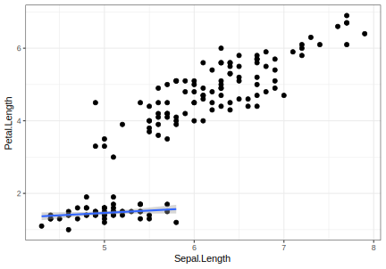
Alljärgnevalt näiteks moodus kuidas öelda, et me soovime regressioonijoont näidata ainult iiriseliikide virginica või versicolor andmetele.
## First we filter only data that we want to use for regressionline
smooth_data <- filter(iris, Species %in% c("virginica", "versicolor"))
## Then we use this filtered dataset in geom_smooth
ggplot(iris, aes(x = Sepal.Length, y = Petal.Length)) +
geom_point() +
geom_smooth(data = smooth_data, method = "lm")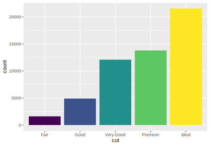
Järgnev kood võimaldab eksplitsiitselt kasutada fititud regressioonikoefitsiente, kasutades regeressioonijoone määramiseks koordinaatteljestikus x-telje lõikumispunkti ja sirge tõusu. Lineaarse mudeli fittimist õpime peatükis …. Kasuta geom_abline().
## Create plot
p <- ggplot(data = mtcars, aes(x = wt, y = mpg)) +
geom_point()
## Fit model and extract coefficients
model <- lm(mpg ~ wt, data = mtcars)
coefs <- coef(model)
## Add regressionline to the plot
p + geom_abline(intercept = coefs[1],
slope = coefs[2],
color = "red",
linetype = "dashed",
size = 1.5)
12.7.1 Kaalutud lineaarne mudel
Kaalutud lineaarne mudel on viis anda andmepunktidele, mida me tähtsamaks peame (või mis on täpsemalt mõõdetud) suurem kaal. Kõigepealt, siin on USA demograafilised andmed midwest “ggplot2” library-st erinevate kesk-lääne omavalitsuste kohta (437 omavalitsust).
Me valime midwest andmetest välja kolm muutujat: “percwhite”, “percbelowpoverty”, “poptotal”.
midwest_subset <- midwest %>% select(percwhite, percbelowpoverty, poptotal)Me tahame teada, kuidas valge rassi osakaal ennustab vaesust, aga me arvame, et suurematel omavalitsustel peaks selles ennustuses olema suurem kaal kui väiksematel. Sest me arvame, et väikestel omavalitsustel võib olla suurem valimiviga ja need võivad olla mõjutatud meie mudelis kontrollimata teguritest, nagu mõne suure tööandja käekäik. Selleks lisame geom_smooth()-i lisaargumendi “weight”.
ggplot(midwest_subset, aes(percwhite, percbelowpoverty)) +
geom_point(aes(size = poptotal)) +
geom_smooth(aes(weight = poptotal), method = lm, size = 1) +
geom_smooth(method = lm, color = "red") +
labs(x = "Percent white",
y = "Percent below poverty",
caption = "Sinine joon on kaalutud mudel\npunane joon on tavaline mudel ",
title = "Vaesusriski seos rassiga")
Kaalumine mitte ainult ei muutnud sirge asukohta, vaid vähendas ka ebakindlust sirge tõusu osas.
12.8 Tulpdiagramm
x - faktormuutuja; y - protsent; x - faktormuutuja; y - sündmuse esinemiste arv
Tulpdiagramme on hea kasutada kahel viisil: 1. lugemaks üles, mitu korda midagi juhtus ja 2. näitamaks osa tervikust (proportsiooni).
str(diamonds)
#> Classes 'tbl_df', 'tbl' and 'data.frame': 53940 obs. of 10 variables:
#> $ carat : num 0.23 0.21 0.23 0.29 0.31 0.24 0.24 0.26 0.22 0.23 ...
#> $ cut : Ord.factor w/ 5 levels "Fair"<"Good"<..: 5 4 2 4 2 3 3 3 1 3 ...
#> $ color : Ord.factor w/ 7 levels "D"<"E"<"F"<"G"<..: 2 2 2 6 7 7 6 5 2 5 ...
#> $ clarity: Ord.factor w/ 8 levels "I1"<"SI2"<"SI1"<..: 2 3 5 4 2 6 7 3 4 5 ...
#> $ depth : num 61.5 59.8 56.9 62.4 63.3 62.8 62.3 61.9 65.1 59.4 ...
#> $ table : num 55 61 65 58 58 57 57 55 61 61 ...
#> $ price : int 326 326 327 334 335 336 336 337 337 338 ...
#> $ x : num 3.95 3.89 4.05 4.2 4.34 3.94 3.95 4.07 3.87 4 ...
#> $ y : num 3.98 3.84 4.07 4.23 4.35 3.96 3.98 4.11 3.78 4.05 ...
#> $ z : num 2.43 2.31 2.31 2.63 2.75 2.48 2.47 2.53 2.49 2.39 ...loeb üles, mitu korda esineb iga cut
ggplot(diamonds) +
geom_bar(aes(x = cut, fill = cut)) +
theme(legend.position="none")
Pane tähele, et y-teljel on arv, mitu korda esineb tabelis iga cut. See arv ei ole tabelis muutuja. geom_bar, geom_hist, geom_dens arvutavad plotile uued y väärtused — nad jagavad andmed binidesse ja loevad üles, mitu andmepunkti sattus igasse bini.
Kui tahad tulpdiagrammi proportsioonidest, mitu korda eineb tabelis igat cut-i, siis tee nii:
ggplot(diamonds) +
geom_bar(aes(x = cut, y = ..prop.., group = 1))Pane tähele et tulpade omavahelised suhted jäid samaks. Muutus ainult y-telje tähistus.
Edasi lisame eelnevale veel ühe muutuja: clarity. Nii saame üles lugeda kõigi cut-i ja clarity kombinatsioonide esinemise arvu või sageduse. Erinvate clarity tasemete esinemiste arv samal cut-i tasemel on siin üksteise otsa kuhjatud, mis tähendab, et tulpade kõrgus ei muutu võrreldes eelnevaga.
ggplot(diamonds) +
geom_bar(aes(x = cut, fill = clarity))
Kui me tahame, et cut-i ja clarity kombinatsioonid oleks kastidena ükteise sees, pigem kui üksteise otsa kuhjatud, siis kasutame position = “identity” argumenti.
ggplot(diamonds, aes(x = cut, fill = clarity)) +
geom_bar(alpha = 0.7, position = "identity") 
ka see graafik pole väga lihtne lugeda. Parem viime clarity klassid üksteise kõrvale
ggplot(data = diamonds, aes(x = cut, fill = clarity)) +
geom_bar(position = "dodge")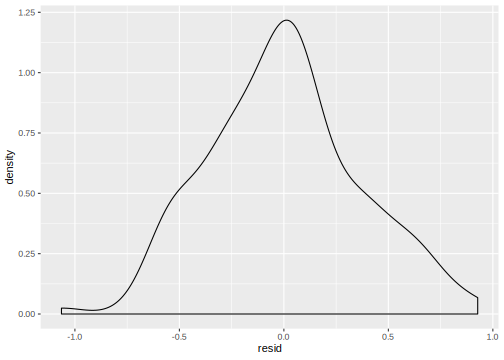
Eelnev on hea viis kuidas võrrelda clarity tasemete esinemis-sagedusi ühe cut-i taseme piires.
Ja lõpuks, position=“fill” normaliseerib tulbad, mis muudab selle, mis toimub iga cut-i sees, hästi võrreldavaks. See on hea viis, kuidas võrrelda clarity tasemete proportsioone erinevate cut-i tasemete vahel.
ggplot(data = diamonds, aes(x = cut, fill = clarity)) +
geom_bar(position = "fill")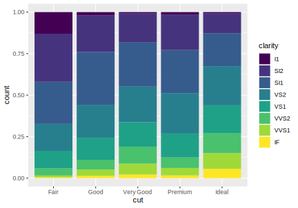
Ja lõpetuseks, kui teile miskipärast ei meeldi Cleveland plot ja te tahate plottida tulpdiagrammi nii, et tulba kõrgus vastaks tabeli ühes lahtris olevale numbrile, mitte faktortunnuse esinemiste arvule tabelis, siis kasutage geom_col()
df <- tibble(a=c(2.3, 4, 5.2), b=c("A", "B", "C"))
ggplot(df, aes(b, a)) + geom_col()12.9 Residuaalide plot
Alustame lineaarse mudeli fittimisest ja mudeli ennustuse lisamisest algsele andmetabelile. Me fitime polünoomsse mudeli:
\[Sepal.Length = intercept + b_1 * Petal.Length + b_2 * Petal.Length^2 + b_3 * Petal.Length^3\]
Mudeli ennustused keskmisele õielehe pikkusele (Sepal.Length) saame arvutada fikseerides mudeli koefitsiendid nende fititud väärtustega ja andes mudeli valemisse ühtlase rea võimalikke tolmuka pikkusi. Nii saame igale selle rea liikmele vastava ennustuse õielehe keskmisele pikkusele. Selleks teeme ühetulbalise andmeraami pred_matrix, millele lisame abifunktsiooni add_predictions() abil arvutatud mudeli ennustused. Need ilmuvad tabelisse uue tulbana “pred”.
library(modelr)
#fit the model
m1 <- lm(Sepal.Length~poly(Petal.Length, 3) , data= iris)
#make prediction matrix (equally spaced non-empirical Petal Length values)
pred_matrix <- tibble(Petal.Length=seq(min(iris$Petal.Length),
max(iris$Petal.Length),
length.out= 100))
#add prediction to each value in the prediction matrix
pred_matrix <- add_predictions(pred_matrix, m1)Nii saab mugavalt visualiseerida ka keeruliste mudelite ennustusi.
ggplot(pred_matrix, aes(x = Petal.Length)) +
geom_point(data= iris, aes(y = Sepal.Length)) +
geom_line(aes(y = pred))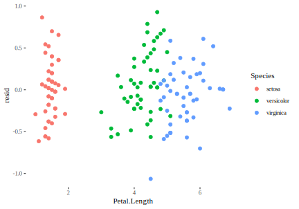
Nüüd lisame irise tabelisse residuaalid mugavusfunktsiooni add_residual() abil (tekib tulp “resid”). Residuaal on lihtsalt andmepunkti Sepal.Length väärtus miinus mudeli ennustus.
iris1 <- iris
iris1 <- add_residuals(iris1, m1)
ggplot(iris1, aes(resid)) + geom_density()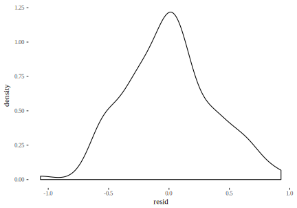
See plot näitab, et residuaalid on enam vähem 0-i ümber koondunud, aga negatiivseid residuaale paistab veidi enam olevat.
Tegelik residuaaliplot näeb välja selline:
ggplot(iris1, aes(Petal.Length, resid, color=Species)) +
modelr::geom_ref_line(h = 0) +
geom_point() 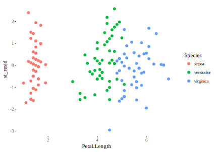
See võimaldab otsustada, kas mudel ennustab võrdselt hästi erinevatel predikrori (Petal.Length) väärtustel. Antud mudelis ei näe me süstemaatilisi erinevusi residuaalides üle õielehtede pikkuste vahemiku.
Proovime sama lihtsa lineaarse mudeliga \(Sepal.Length = intercept + b * Petal.Length\). 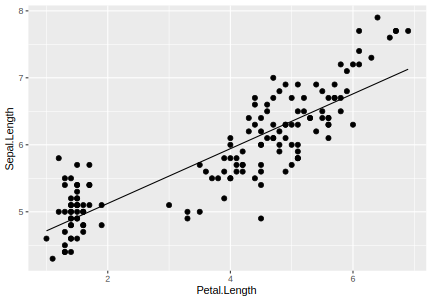
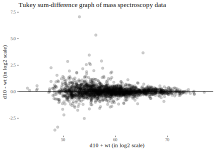
Siit näeme, et I. setosa puhul on residuaalid pigem >0 ja et see mudel töötab paremini I. versicolor ja I. virginica puhul.
Eelnevatelpiltidel on residuaalid algsetes Sepal Length-i mõõtühikutes (cm).
Et otsustada, kas üks või teine residuaal on 0-st piisavalt kaugel, avaldame residuaalid standardhälvete ühikutes (nn Studentized residuals). Residuaalide muster joonisel sellest ei muutu, muutub vaid y-telje tähistus.
iris1 <- mutate(iris1, st_resid=resid/sd(resid))
ggplot(iris1, aes(Petal.Length, st_resid, color=Species)) +
geom_ref_line(h = 0) +
geom_point()Nüüd näeme I. virginica isendit, mille koha pealt mudel ülehindab 3 standardhälbega.
Kumb mudel on parem?
anova(m1, m2)
#> Analysis of Variance Table
#>
#> Model 1: Sepal.Length ~ poly(Petal.Length, 3)
#> Model 2: Sepal.Length ~ Petal.Length
#> Res.Df RSS Df Sum of Sq F Pr(>F)
#> 1 146 19.4
#> 2 148 24.5 -2 -5.18 19.5 3.1e-08 ***
#> ---
#> Signif. codes:
#> 0 '***' 0.001 '**' 0.01 '*' 0.05 '.' 0.1 ' ' 1m1 on selgelt parem (RSS 19 vs 25, p = e-08)
12.10 Tukey summa-erinevuse graafik
Seda gaafikutüüpi tuntakse meditsiinis ka Bland-Altmani graafikuna. Te sooritate korraga palju paralleelseid mõõtmisi – näiteks mõõdate mass-spektroskoopiaga 1000 valgu taset. Kui teete seda katset kaks korda (või katse vs. kontroll n korda) ja tahate näha süstemaatilisi erinevusi, siis tasub joonistada summa-erinevuse graafik. See on hea olukordades, kus ei ole vahet, mis läheb x ja mis läheb y teljele (erinevalt regressioonimudelitest ja residuaaliplottidest, kus see on väga tähtis). Meie graafik on x ja y suhtes sümmeetriline.
Graafik ise on lihtsalt scatterplot, kus horisontaalsele teljele plotitud x + y väärtused ja vertikaalsele teljele plotitud y - x väärtused. Me lisame ka horisontaalsele teljele 0 - joone, et meil oleks lihtsam oma vaimusilmas efekti suuruste punktipilve tsentreerida.
Näituseks plottime mass spektroskoopia andmed, kus kahel tingimusel (d10 ja wt) on kummagil tehtud kolm iseseisvat katset. Järgneb tabel df_summary2, kus on 2023 valgu tasemete keskväärtused kahel tingimusel, ning Tukey summa-erinevuse graafik
head(df_summary2, 3)
#> # A tibble: 3 x 3
#> # Groups: gene [2,023]
#> gene d10 wt
#> <fct> <dbl> <dbl>
#> 1 aaeR 25.6 25.6
#> 2 aas 28.8 28.8
#> 3 accA 33.7 33.6ggplot(df_summary2, aes(x = d10 + wt, y = d10 - wt)) +
geom_point(alpha=0.2) +
geom_hline(yintercept = 0) +
labs(title="Tukey sum-difference graph of mass spectroscopy data", y="d10 - wt (in log2 scale)", x= "d10 + wt (in log2 scale)")+
theme_tufte()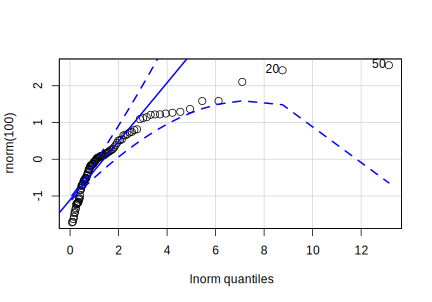
Meil näha on ilusti tsentreeritud keskmised 3st mõõtmisest kahele tingimusele, kus iga punkt vastab ühele valule. x telg annab suhtelised valgukogused log2 skaalas (selles skaalas on originaalandmed) ja y telg annab efekti suuruse (tingimus 1 miinus tingimus 2).
Me näeme sellelt pildilt, et
mida väiksem on valgu kogus, seda suurema tõenäosusega saame tugeva efekti (mis viitab valimivea rollile, eriti suuremate efektide puhul),
efektipilv on kenasti nullile tsentreeritud (see näitab, et andmete esialgne töötlus on olnud korralik),
enamus valgud ei anna suuri efekte (bioloog ohkab siinkohal kergendatult) ja
positiivse märgiga efektid kipuvad olema suuremad, kui negatiivsed efektid (2.5 ühikuline effektisuurus log2 skaalas tähendab 2**2.5 = 5.7 kordset erinevust katse ja kontrolli vahel).
Proteoomikas on praegu populaarsed MA-fraafikud, kus y-teljel (M) on katse vs kontroll erinevus log2 skaalas ja x-teljel (A) on keskmine tase.
Log2 skaala koos lahutamistehtega on mugav sest
üks log2 ühik y-teljel vastab kahekordsele efektile
(kaks ühikut neljakordsele, kolm ühikut kaheksakordsele, jne)
ja 0 vastab ühekordsele ehk null-efektile.12.10.1 Vulkaaniplot
Tukey summa-erinevuse graafiku vaene sugulane on vulkaaniplot, kus horisontaalsel teljel on y - x (soovitavalt log2 skaalas) ja vertikaalsel teljel on p väärtused, mis arvutatud kahe grupi võrdluses, kusjuures p väärtused on -log10 skaalas. Vulkaaniplotti tutvustame mitte selle pärast, et seda soovitada, vaid ainult selle tõttu, et seda kasutatakse massiliselt näiteks proteoomika vallas. Vulkaaniplot on tõlgendamise mõttes kolmemõõtmeline ja pigem keeruline, näitlikustades korraga efekti suurust (ES), varieeruvust (sd) ja valimiviga (see sõltub valimi suurusest, aga ka mõõtmisobjekti/valgu tasemest).
Joonistame vulkaani samade andmete põhjal, mida kasutasime Tukey summa-erinevusgraafiku valmistamieks. Me alustame tabeli “df” ettevalmistamisest: d10_1, d10_2 ja d10_3 on kolm iseseisvat katset ja wt_1, wt_2 ja wt_3 on kolm iseseisvat kontrolli.
head(df, 3)
#> gene d10_1 d10_2 d10_3 wt_1 wt_2 wt_3
#> 1 rpoC 36.3 36.3 36.4 36.2 36.3 36.4
#> 2 rpoB 36.2 36.3 36.2 36.1 36.3 36.3
#> 3 mukB 32.9 33.0 33.2 32.9 33.1 33.3Me lisame tabelile veeru p väärtustega ja veeru effekti suurustega (ES), kasutades apply() funktsiooni sees tavapärast indekseerimist (vt ptk …).
df_x <- df[2:7] #numeric variables only
#p values
df$p <- apply(df_x, 1, function(x) t.test(x[1:3], x[4:6])$p.value)
#effect sizes (mean experiment - mean control)
df$ES <- apply(df_x, 1, function(x) mean(x[1:3]) - mean(x[4:6]))
plot <- ggplot(df, aes(ES, -log10(p))) +
geom_point(alpha=0.2) +
geom_hline(yintercept = -log10(0.05), linetype=2) + #add horizontal line
geom_vline(xintercept = c(-1, 1), linetype=2)+ #add 2 vertical lines
labs(x="d10 - wt (in log2 scale)",
y= "- log10 of p value",
title="volcano plot")+
theme_tufte()
plot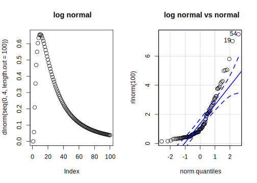
library(ggrepel) #for geom_text_repel()
d <- df %>% filter(ES > 1 | ES < -1) %>% filter(p < 0.05) #data for text labels
plot + geom_label_repel(data=d, aes(label=gene), cex=2)
#alternative: geom_text_repel(data=d, aes(label=gene), cex=2)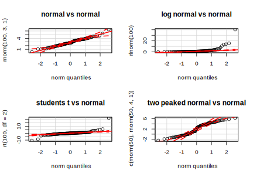
Sellel pildil markeerib horisontaalne punktiirjoon p = 0.05 ja vertikaalsed punktiirid 2-kordse efektisuuruse (üks ühik log2 skaalal; ühekordne ES võrdub sellel skaalal nulliga). Inimesed, kes paremini ei tea, kipuvad vulkaaniplotti tõlgendama nii: kui punkt (loe: valk) asub horisontaalsest joonest kõrgemal ja ei asu kahe vertikaalse joone vahel, siis on tegu “päris” efektiga. Seevastu inimesed, kes teavad, teavad ka seda, et p väärtuste ühekaupa tõlgendamine ei ole sageli mõistlik. Iga p väärtus koondab endasse informatsiooni kolmest muutujast: valimi suurus (N), varieeruvus (sd) ja efekti suurus (ES = katse - kontroll). Kuigi me saame vulkaaniplotil asuvaid punkte võrreldes ignoreerida valimi suuruse mõju (kuna me teame, et meil on iga punkti taga 3 + 3 mõõtmist), koondab iga p väärtus endasse infot nii ES kui sd kohta viisil, mida me ei oska hästi üksteisest lahutada (siiski, pane tähele, et horisontaalsel teljel on ES). Me teame, et igas punktis on nii ES kui sd mõjutatud valimiveast, mis on kummagi näitaja suhtes teisest sõltumatu. Seega, igal neljandal valgul on valimiveaga seose topeltprobleem: ülehinnatud ES ja samal ajal alahinnatud sd, mis viib oodatust ohtlikult väiksemale p väärtusele.
Lisaks, p väärtuse definitsioonist (p on sinu andmete või neist ekstreemsemate andmete tõenäosus tingimusel, et nullhüpotees kehtib) tuleneb, et kui null hüpotees on tõene (tegelik ES = 0), siis on meil täpselt võrdne tõenäosus saada oma p väärtus ükskõik kuhu nulli ja ühe vahele. Seega, nullhüpoteesi kehtimise korral ei sisalda individuaalne p väärtus mitte mingisugust kasulikku informatsiooni.
Oluline on mõista, et p väärtuse arvutamine toimub nullhüpoteesi all, mis kujutab endast põhimõtteliselt lõpmatu hulga hüpoteetiliste valimite põhjal – mille N = 3 ja sd = valimi sd – arvutatud lõpmatu hulga hüpoteetiliste valimikeskmiste jaotust (iga geeni jaoks eraldi arvutatuna). Seega demonstreerib p väärtus statistikat oma kõige abstraktsemas vormis.
Igal juhul peaks olema siililegi selge, et kui valimi suurus on nõnda väike kui 3, siis valimi põhine sd ega valimi põhine efekti suurus ei ole kuigi usaldusväärsed ennustama tegelikku populatsiooni sd-d ega ES-i!
Kuidas ikkagi vulkaani tõlgendada?
Enamus efektisuuruseid < 2 (see on hea)
Enamus p väärtusi > 0.05 (ka hea)
vulkaan on pisut ebasümmeetriline – meil on rohkem positiivseid effekte, kus d10 > wt (see on teaduslikult oluline uudis)
Enamus valke, mille p < 0.05, annavad ES < 2. (See viitab, et meil on palju katseid, kus iseseisvate katsete vaheline varieeruvus on väga madal.)
Oluline osa valke (võib-olla ca 40%), mille ES > 2, annavad p > 0.05. (Viitab valimivea olulisele osale meie tulemustes.)
Enamus kõige suuremate ES-dega valke on üllatavalt kõrge p väärtusega. (Viitab valimivea olulisele osale meie tulemustes.)
Seega ei ole meil ES-i ja p väärtuse vahel selget suhet, kus suurtel efektidel oleks selgelt madalam p väärtus kui väikestel efektidel. Kuna meil pole põhust arvata, et valkudel, millel on suurem ES, on süstemaatiliselt suurem varieeruvus, siis paistab, et meie vulkaan dokumenteerib eelkõige valimivigu, ja seega pigem katse üldist madalat kvaliteeti, kui üksikute efektide “tõelisust”. Seega tundub, et tegu on mudavulkaaniga.
Hea küll, joonistame oma vulkaani uuesti p väärtuste põhjal, mis seekord on arvutatud eeldusel, et mõlema grupi (d10 ja wt) varieeruvused on geeni kaupa võrdsed. See tähendab, et kui ES-i arvutamisel on valimi suurus 3 (kolme katse ja kolme kontrolli keskmine), siis sd arvutamisel, mis omakorda läheb p väärtuse arvutamise valemisse, on valimi suurus mõlemale grupile 6.
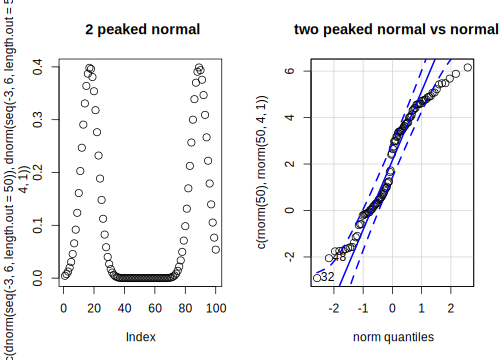
Pilt on küll detailides erinev, aga suures plaanis üsna sarnane eelmisega.
12.11 QQ-plot
Kuidas võrrelda kahte jaotust? Kõige lihtsam on joonistada bihistogramm, mis töötab ühtlasi t testi ekslploratoorse analoogina (ei anna ühte numbrit, aga selle eest annab palju parema ülevaate kui t test, kuidas kahe grupi valimid – kuigi mitte tingimata nende taga olevad populatsioonid – tegelikult erinevad).
library(Hmisc)
histbackback(iris$Sepal.Length, iris$Sepal.Width)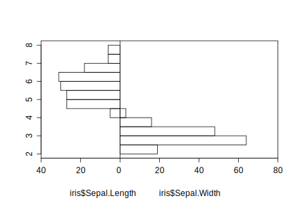
See bihistogramm, mis küll veidi jaburalt võrdleb 3 Irise liigi tolmukate pikkusi ja laiusi, näitab, et kahe grupi keskmised on selgelt erinevad (ülekate peaaegu puudub), aga et ka jaotused ise erinevad omajagu (tolmukate laiuste jaotus on kitsam ja teravam).
Kuidas aga võrrelda oma andmete jaotust teoreetilise jaotusega, näiteks normaaljaotusega? Selleks on parim viis kvantiil-kvantiil plot ehk qq-plot. Kvantiil tähendab lihtsalt andmepunktide osakaalu, mis on väiksemad kui mingi etteantud väärtus. Näiteks kvantiil 0.3 (mis on sama, mis 30s protsentiil) tähistab väärtust, millest 30% kogutud andmeid on väiksemad ja 70% on suuremad. Näiteks standartse normaaljaotuse (mean = 0, sd = 1) 0.5-s kvantiil on 0 ja 0.95-s kvantiil on 1.96.
QQ-plot annab empiiriliste andmete kvantiilid (y teljel) teoreetilise jaotuse kvantiilide vastu (x teljel). Punktide arv graafikul vastab teie andmepunktide arvule. Referentsjoon oma 95% veapiiridega (punased katkendjooned) vastab ideaalsele olukorrale, kus teie andmete jaotus vastab teoreetilisele jaotusele (milleks on enamasti normaaljaotus).
QQ-plot põõrab eelkõige tähelepanu jaotuste sabadele/õlgadele, mis on OK, sest sabad on sageli probleemiks vähimruutude meetodiga regressioonil. Kui me võrdleme normaaljaotusega paremale kiivas jaotust (positive skew), siis tulevad punktid mõlemas servas kõrgemale kui referentsjoon. See juhtub näit Chi-ruut jaotuse korral. Kui meil on paksude õlgadega sümmeetriline jaotus, nagu studenti t, siis tulevad ülemise otsa punktid kõrgemale ja alumise otsa punktid madalamale kui referentsjoon.
Kõigepealt demonstreerime siiski olukorda, kus meie andmed on normaaljaotusega ja me võrdleme neid teoreetilise lognormaaljaotuse vastu. Võrdluseks saame kasutada kõiki R-s defineeritud jaotusi (distribution = “jaotus”).
library(car)
qqPlot(rnorm(100), distribution = "lnorm")
#> [1] 51 21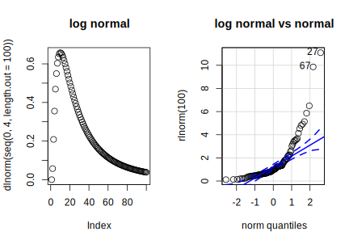
Proovime erinevaid jaotusi normaaljaotuse vastu. Kõigepealt jaotused:
par(mfrow = c(1, 2))
plot(dnorm(seq(0,6, length.out = 100), 3, 1), main = "normal")
qqPlot(rnorm(100, 3, 1), main = "normal vs normal") #default on vrdls normaaljaotusega.
#> [1] 67 5
par(mfrow=c(1,1))
par(mfrow = c(1, 2))
plot(dlnorm(seq(0,4, length.out = 100)), main = "log normal")
qqPlot(rlnorm(100), main = "log normal vs normal")
#> [1] 1 55
par(mfrow=c(1,1))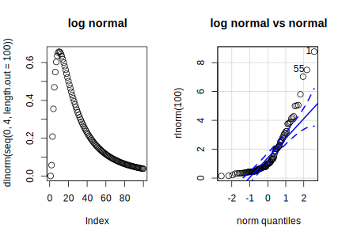
par(mfrow = c(1, 2))
plot(dt(seq(-4,4, length.out = 100), df=2), main = "student t")
qqPlot(rt(100, df=2), main = "students t vs normal")
#> [1] 9 24
par(mfrow=c(1,1))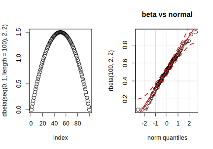
par(mfrow = c(1, 2))
plot(c(dnorm(seq(-3,6, length.out = 50)), dnorm(seq(-3,6, length.out = 50), 4, 1)), main = "2 peaked normal")
qqPlot(c(rnorm(50), rnorm(50, 4,1)), main = "two peaked normal vs normal")
#> [1] 89 34
par(mfrow=c(1,1))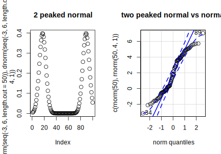
par(mfrow = c(1, 2))
plot(dunif(seq(0, 1, length=100)))
qqPlot(runif(100), main = "uniform vs normal") #default on vrdls normaaljaotusega.
#> [1] 5 97
par(mfrow=c(1,1))
par(mfrow = c(1, 2))
plot(dchisq(seq(0, 2, length=100), df=2))
qqPlot(rchisq(100, df=2), main = "chi square vs normal")
#> [1] 29 31
par(mfrow=c(1,1))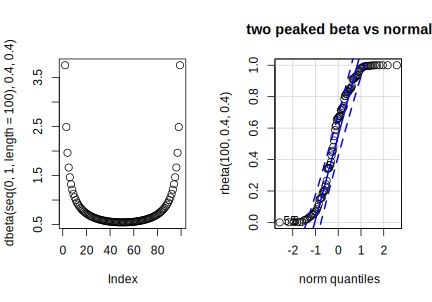
par(mfrow = c(1, 2))
plot(dbeta(seq(0, 1, length=100), 2, 2))
qqPlot(rbeta(100, 2, 2), main = "beta vs normal")
#> [1] 41 85
par(mfrow=c(1,1))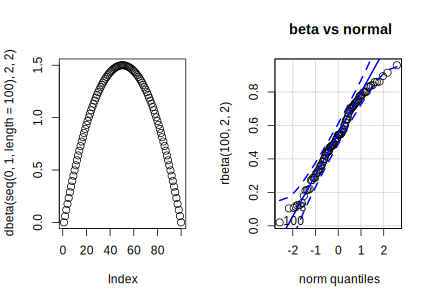
Proovime veel erinevaid jaotusi normaaljaotuse vastu. Kõigepealt jaotused:
#> [1] 3 78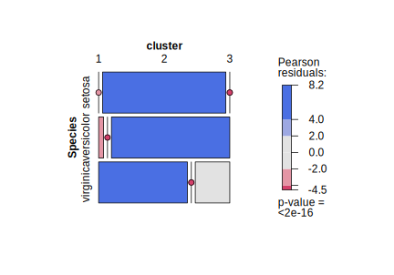
Nagu näha, beta jaotus, mis on normaaljaotusest palju laiem, on qq-plotil sellest halvasti eristatav. Erinevus on väga madalatel ja väga kõrgetel kvantiilidel (jaotuste otstes).
Ja exponentsiaalse jaotuse korral:
y <- rexp(100)
par(mfrow=c(1,2))
plot(dexp(seq(0, 5, length=100)), main="exponential distr.")
qqPlot(y, main = "exponential vs normal")
#> [1] 19 36
par(mfrow=c(1,1))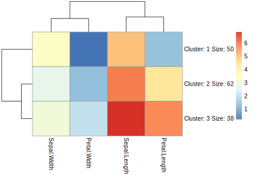
QQ-plotiga saab võrrelda ka kahte empiirilist jaotust, näiteks Irise liikide tolmukate pikkuste ja tolmukate laiuste jaotusi (vt ka peatüki algusest bihistogrammi). Selle meetodi oluline eelis on, et võrreldavad jaotused võivad olla erineva suurusega (N-ga). Siin kasutame base::R qqplot() funktsiooni.
qqplot(iris$Sepal.Length, iris$Sepal.Width)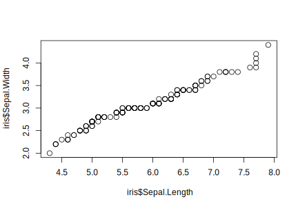
Nagu näha, erinevad jaotused põhiliselt kõrgemates kvantiilides, kus tolmuka pikkus > 7.5 ja tolmuka laius > 3.6.
car::qqPlot saab kasutada ka lineaarse regressiooni normaalsuseelduse kontrollimiseks. Kui ennustatav y-muutuja on normaaljaotusega, siis peaksid residuaalid olema normaaljaotusega (keskväärtus = 0). Selle normaalsuse määramiseks plotitakse standardiseeritud residuaalid teoreetiliste normalsete kvantiilide vastu. Selleks anname qqPlot() funktsiooni lm mudeliobjekti
m1 <- lm(Sepal.Length~ Sepal.Width + Petal.Width, data = iris)
qqPlot(m1)
#> [1] 107 123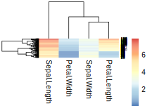
12.12 Heat map
Heat map asendab tabelis numbrid värvidega, muutes nii keerulised tabelid kiiremini haaratavateks. Samas, inimese aju ei ole kuigi edukas värvitoone pidevate muutujate numbrilisteks väärtusteks tagasi konverteerima, mis tähendab, et heat map võimaldab lugejal kiiresti haarata mustreid andmetes, aga ei võimalda teha täpseid võrdlusi tabeli üksikute lahtrite vahel.
Kõigepealt lihtne heat map, kus irise tabeli numbrilistes veergudes on asendatud arvud värvitoonidega, aga tabeli üldine kuju ei muutu:
library(pheatmap)
pheatmap(iris[1:4], fontsize_row = 3, cluster_cols = FALSE, cluster_rows = FALSE)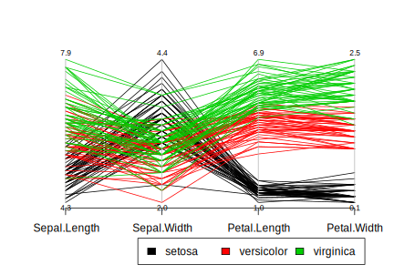
Et andmetes leiduvad mustrid paremini välja paistaksid, tasub heat mapil andmed ümber paigutada kasutades näiteks hierarhilist klassifitseerimist. Seega lisanduvad heat mapile ka dendrogrammid.
pheatmap(iris[1:4], fontsize_row = 5)
Irise tabel on nüüd mõlemas dimensioonis sorteeritud hierarhilise klasterdamise läbi, mida omakorda kajastab 2 dendrogrammi (üks kummagis tabeli dimensioonis). Dendrogramm mõõdab erinevust/sarnasust. Dendrogrammi lugemist tuleb alustada selle harunenud otstest. Kõigepealt jagab dendrogramm vaatlused paaridesse, misjärel hakkab järk-järgult lähimaid paare klastritesse ühendama kuni lõpuks kõik vaatlused on ühendatud ainsasse klastrisse. Dendrogrammi harude pikkused markeerivad selle kriteerium-statistiku väärtust, mille järgi dendrogramm koostati (siin on palju võimalusi, aga kõige levinum on eukleidiline kaugus). Igal juhul, mida pikem haru, seda suuremat erinevust see kajastab. Me võime igal tasemel tõmmata läbi dendrogrammi joone ja saada just nii palju klastreid, kui palju harunemisi jääb sellest joonest ülespoole. Dendrogrammi harud võivad vabalt pöörelda oma vartel, ilma et see dendrogrammi topograafiat muudaks – seega on joonisel olev dendrogrammi kuju lihtsalt üks juhuslikult fikseeritud olek paljudest.
Nüüd me ütleme, et me tahame oma irise liigid ajada täpselt kolme k-means klastrisse. NB! k-means klustrid on arvutatud hoopis teisel viisil kui eelmisel joonisel olevad hierarhilised klastrid. Siin alustame k = 3 tsentroidist, assigneerime iga andmepunkti oma lähimale tsentroidile, arvutame tsentroidid ümber kui klastri kõikide andmepunktide keskmised, assigneerime uuesti kõik andmepunktid oma tsentroidile ja kordame seda tsüklit näiteks 10 korda.
a <- pheatmap(iris[1:4], kmeans_k = 3)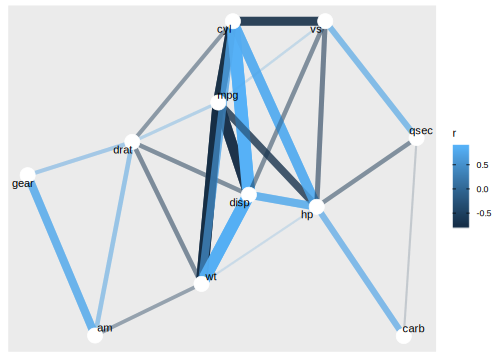
Lisame klastrid irise tabelisse ja vaatame, kui hästi klastrid tabavad kolme irise liiki:
iris$cluster <- a$kmeans$cluster
table(iris$Species, iris$cluster)
#>
#> 1 2 3
#> setosa 0 33 17
#> versicolor 46 0 4
#> virginica 50 0 0Ja sama graafiliselt:
ggplot(iris, aes(factor(cluster), Species)) + geom_count()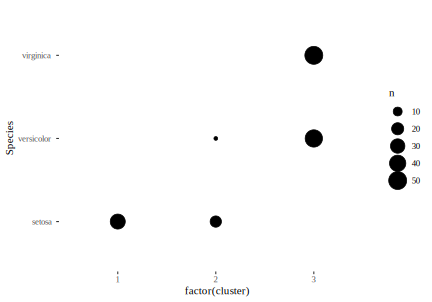
Või alternatiivina esitatuna tulpade pikkustena mosaiikgraafikul (tulpade pikkusi on lihtsam võrrelda kui pindalasid eelmisel graafikul):
library(vcd)
iris_x <- iris %>% select(Species, cluster)
iris_x$cluster <- as.factor(iris_x$cluster)
mosaic(~Species + cluster, data= iris_x, shade=T, legend=FALSE)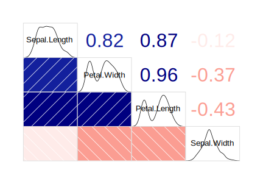
12.12.1 Korrelatsioonimaatriksid heat mapina
Heat map on ka hea viis visualiseerida korrelatsioonimaatrikseid.
Kõigepealt tavaline scatterplot maatriks.
plot(iris[1:4], col=iris$Species)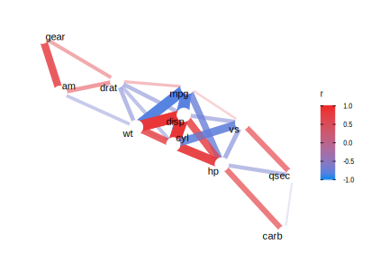
Seejärel korrogramm, kus diagonaalist allpool tähistavad värvid korrelatsioone ja diagonaalist ülalpool on samad korrelatsioonid numbritega. Me sorteerime mustrite parema nägemise huvides ka andmetulbad ümber (order=TRUE), seekord kasutades selleks peakomponent analüüsi (PCA).
library(corrgram)
corrgram(iris[1:4], order = TRUE, lower.panel=corrgram::panel.shade,
upper.panel=panel.cor, diag.panel=panel.density)12.12.2 Paraleelkoordinaatgraafik
Alternatiivne võimalus on scatterplot maatriksile on joonistada grrafik läbi paraleelsete koordinaatide.
library(MASS)
parcoord(iris[1:4], col = iris$Species, var.label = TRUE, lwd = 1)
par(xpd = TRUE)
legend(x = 1.75, y = -.25, cex = 1,
legend = as.character(levels(iris$Species)),
fill = unique(iris$Species), horiz = TRUE)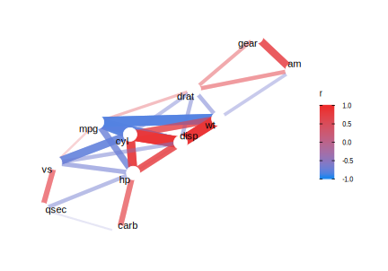
Siit näeme, kuidas Petal length ja Petal width on parim viis, et setosat teistest eristada.
12.12.3 Korrelatsioonid võrgustikuna
Võrgustik koosneb sõlmedest ja nende vahel olevatest servadest (nodes and edges). Meie eesmärk on joonisel näidata sõlmedena ainult need muutujaid, millel esineb mingist meie poolt etteantud numbrist suurem korrelatsioon mõne teise muutujaga. Korrelatsioone endid tähistavad võrgu servad. Järgnevasse voogu, kuhu sisestame kogu mtcars tabeli, lähevad ainult numbrilised muutujad (faktormuutujad tuleb tabelist välja visata).
library(corrr)
library(igraph)
library(ggraph)
tidy_cors <- mtcars %>%
correlate() %>%
stretch()
# Convert correlations stronger than some value
# to an undirected graph object
graph_cors <- tidy_cors %>%
filter(abs(r) > 0.6) %>%
graph_from_data_frame(directed = FALSE)
# Plot
ggraph(graph_cors) +
geom_edge_link(alpha=0.2) +
geom_node_point() +
geom_node_text(aes(label = name), repel = TRUE) +
theme_graph()
Siin on tabeli mtcars kõik korrelatsioonid, mis on suuremad kui absoluutväärtus 0.6-st.
Kenam (ja informatiivsem) versioon eelmisest on
ggraph(graph_cors) +
geom_edge_link(aes(edge_alpha = abs(r), edge_width = abs(r), color = r)) +
guides(edge_alpha = "none", edge_width = "none") +
scale_edge_colour_gradientn(limits = c(-1, 1), colors = c( "dodgerblue2", "firebrick2")) +
geom_node_point(color = "white", size = 5) +
geom_node_text(aes(label = name), repel = TRUE) +
theme_graph() 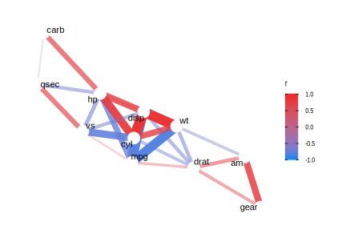
Nipp! Kui teile ei meeldi võrgustiku üldine kuju, jooksutage koodi uuesti – vähegi keerulisemad võrgud tulevad iga kord ise kujuga (säilitades siiski sõlmede ja servade kontaktid).
12.13 Biplot ja peakomponentanalüüs
Kui teil on andmetes rohkem dimensioone, kui te jõuate plottida, siis peakomponentanalüüs (PCA) on üks võimalus multidimensionaalseid andmeid kahedimensionaalsena joonistada. PCA on lineaarne meetod, mis püüab omavahel korrelleeritud muutujad aesendada uute muutujatega, mis oleks võimalikult vähe korrelleeritud. PCA joonise teljed (peakomponent 1 ja peakomponent 2) on valitud nii, et need oleks üksteisega võimalikult vähe korreleeritud ja samas säiliks võimalikult suur osa andmete algsest multidimensionaalsest varieeruvusest. Eesmärk on saavutada 2D (või 3D) muster, mis oleks võimalikult lähedane algse multi-D mustriga. Seega, PCA projitseerib multidimensionaalse andmemustri 2D pinnale viisil, mis püüab säilitada maksimaalse osa algsest andmete varieeruvusest. PCA teeb seda, kasutades lineaarset additiivset mudelit.
See analüüs on mõistlik ainult siis, kui andmed varieeruvad kõige rohkem suunas, mis on ka teaduslikult oluline (ei ole juhuslik müra) ja muutujate vahel ei ole mittelineaarseid interaktsioone (muutujad on sõltumatud). Te ei tea kunagi ette, kas ja millal PCAst võib kasu olla reaalsete mustrite leidmisel – seega tuleks PCA tõlgendamisega olla pigem ettevaatlik, sest inimaju on suuteline mustreid nägema ka seal, kus neid ei ole. Lisaks, isegi kui PCAs ilmuv muster on ehtne, on PCA dimensioone sageli palju raskem teaduslikult tõlgendada kui originaalseid muutujaid.
ir.species <- iris[, 5]
ir.pca <- prcomp(iris[,1:4], center=T, scale = TRUE)
#library(devtools)
#install_github("ggbiplot", "vqv")
library(ggbiplot)
g <- ggbiplot(ir.pca, obs.scale = 1, var.scale = 1,
groups = iris$Species, ellipse = TRUE,
circle = TRUE)
g <- g + scale_color_discrete(name = '') + theme_tufte()
print(g)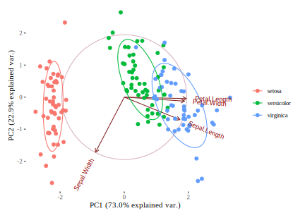
Seega taandasime 4D andmestiku 2D-sse, säilitades seejuurse suure osa algsest andmete varieeruvusest (esimene pekomponent sisaldab 73% algsest varieeruvusest ja 2. peakomponent 23%). Punkidena on näidatud irise isendid, mis on värvitud liigi järgi, ja lisaks on antud vektorid, mis näitavad, millised algsetest muutujatest korreleeruvad millise peakomponendiga. Siit näeme, et Petal.Length, Petal.Width ja Sepal.Width-i varieeruvus kajastub valdavas enamuses PC1 teljel (vektorid on PC1 teljega enam-vähem paralleelsed) ja et Sepal-Width muutuja varieeruvus kajastub suures osas PC2 teljel.
12.13.1 t-sne
Populaarne mittelineaarne viis multidimensionaalsete andmete 2D-sse redutseerimiseks on t-sne (t-Distributed Stochastic Neighbor Embedding), mis vaatab andmeid lokaalselt (mitte kogu andmeruumi tervikuna). Parameeter perplexity tuunitakse kasutaja poolt ja see määrab tasakaalu, millega algoritm vaatab andmeid lokaalselt ja globaalselt. Väiksem perplexity tõstab lokaalse vaatluse osakaalu. Perplexity annab hinnangu, mitu lähimat naabrit igal andmepunktil võiks olla. Üldiselt on soovitus jooksutada t-sne algoritmi mitu korda varieerides perplexity-d 5 ja 50 vahel. Enne selle meetodi kasutamist loe kindlasti https://distill.pub/2016/misread-tsne/
library(tsne)
ts <- tsne(iris[1:4], perplexity = 10)
ts <- as_tibble(ts)#output is a table of 2D t-sne coordinates
ism1 <- bind_cols(iris, ts)
ggplot(ism1, aes(x=V1, y=V2, color=(Species)))+ geom_point()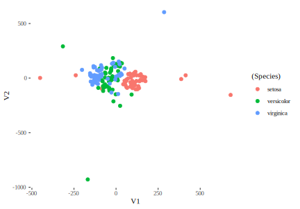